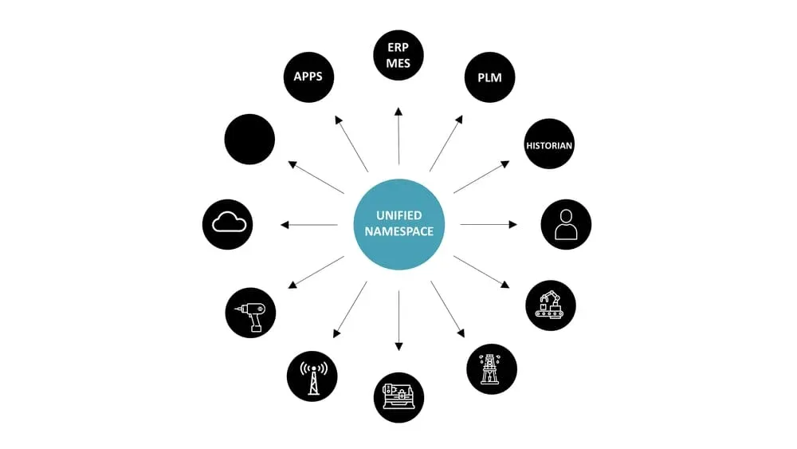
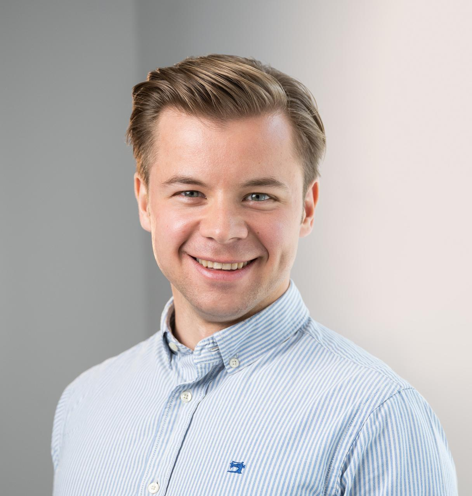

Break Down Your Plant's Data Silos
Your Digital Projects Keep Running over Time and over Budget?
- You worry about missing another deadline because your team spends too much time getting data.
- Your OT engineers are frustrated with the IT department’s slow support.
- You're exhausted from meetings with software vendors who don't understand your business.
Imagine Having Your Plant's Data at Your Fingertips…
- Have confidence that your data is available at high quality in real time.
- Have IT and OT collaborate on the same platform.
- Trust an engineer who worked years for aluminium manufacturers like yourself.
Adopt the Unified Namespace (UNS) as the Single Source of Truth
Unify all data in your business and provide a single access point for it.

Illustration of a Unified Namespace by the United Manufacturing Hub.
✅ Benefits
- Real-time insight in your Overall Equipment Efficiency (OEE).
- Lean yet scalable digital infrastructure that's simple to maintain.
- No more time-consuming integrations: add new systems in days instead of months.
⚙️ How It Works
-
Project call
In this 30-minute video call, we define the implementation scope and deliverables. -
Technical call
In this 60-minute call, we define which machines and systems will be integrated into the UNS initially. Together with IT and OT, we establish the technical requirements. -
On-site UNS workshop
During a one-day on-site meeting, the UNS is introduced to both OT and IT. The objective is to build trust in-person and set clear expectations. -
UNS deployment on-premises
The UNS is configured and deployed at your plant. The majority of this work takes place remotely. -
Integrating one machine and the MES
Once the UNS is installed, sensor data from one machine and the Manufacturing Execution System (MES) are integrated into the UNS. -
Building the first operational dashboard
The interactive dashboard shows the calculated Overall Equipment Effectiveness (OEE) for the given machine. The objective it to demonstrate tangible UNS results to both OT and management. -
Commissioning and training
After ensuring that the UNS deployment meets the specified requirements and functions correctly, the plant personnel is trained in its use and maintenance.
Don't Take My Word For it...
Here's what others in the aluminium industry have said:
Denis worked at Trimet France and has developed R shiny apps for our production needs.
We were really impressed by his commitment, the speed and quality of his work.
Denis is a very gifted Data Engineer, having the innate
understanding of data in the space of manufacturing.
I had the opportunity to work with Denis for a year at Novelis and during this brief time he had left an impact within the team.
Denis did a great job building the data infrastructure for our IoT-related features at ForkOn.
He is highly focused, well
organised and motivated.
He sets very high standards for his work, which always has lead to excellent quality results.
Still Have Questions?
Is open-source software reliable?
The UNS is rooted in IT best-practices. Today, open-source is the standard in every other industry, from pharma to telecommunications. The advantage of mature open-source technologies is the increased availability of experts because of their wide adoption.
What is the total price?
My one-time, fixed-price implementation fee and the recurring yearly maintenance price.
How long will it take?
The integration work takes three to six months, depending on the speed at which your organization is able to provide the required resources agreed upon in the technical call.
Will I be the sole developer?
I will lead the implementation of the project with close support from experienced UNS developers.
Where can I find support after the engagement?
After the training, your plant personnel will have the capability to manage the UNS. In addition, I am available for hire as an advisory retainer to oversee the administration of the UNS.
My Availability is Limited
Given the demanding nature of the engagement, I only take on three clients per year. Secure your spot now.
Why Work With Me?
Unlike general IT-professionals, I have years of industry experience in aluminium production and recycling.

I'm a data consultant who helps aluminium manufacturers break down data silos.
Over the last five years I have provided data engineering services for the aluminium industry. Currently, I work as an independent data consultant building better data infrastructure for aluminium manufacturers.
Before that I was employed as a data engineer at the aluminium rolling and recycling company Novelis. There, I was responsible for transferring process data from rolling mills and cast house furnaces to the cloud.
I began my career as a process engineer at the aluminium smelter of TRIMET at Saint-Jean-de-Maurienne in France. Later I was working as a process engineer at their smelter in Essen, Germany where I developed control software for the electrolysis process.
I hold a degree in Materials Engineering from KU Leuven in Belgium and am based in Berlin, Germany.
Contact
📫 Get my weekly newsletter
📧 denis@gontcharov.eu
🌐 https://gontcharov.eu
👤 https://www.linkedin.com/in/gontcharovd